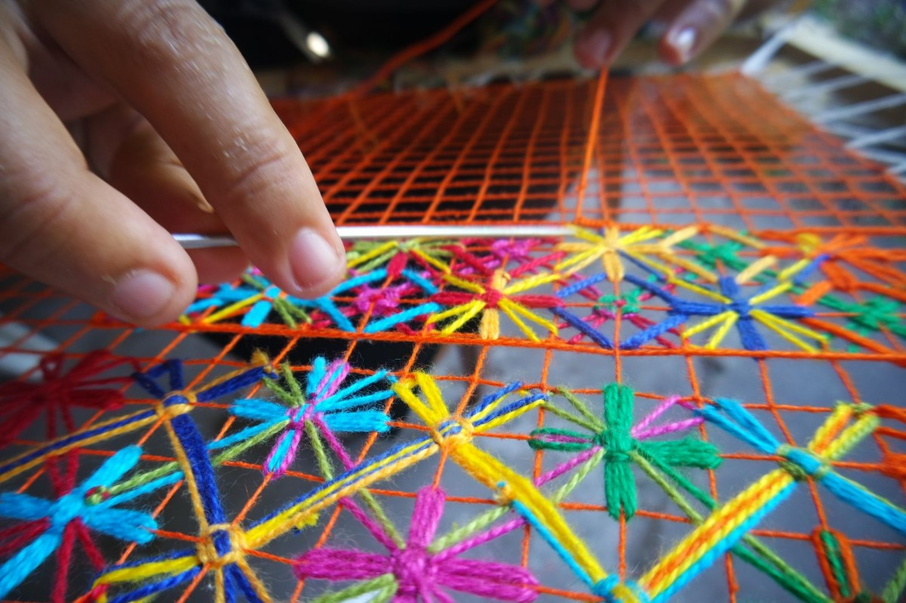

ARTESANATO
Artesanato Alagoano
Artesanato com madeira
A arte em madeira de Alagoas se destaca por suas famosas carrancas, famosas pela proteção aos navegantes do Rio São Francisco. Além delas, os artesãos alagoanos esculpem imagens religiosas e animais da fauna local.

imagem 1
Filé
Pontal da Barra: o bairro das rendeiras. O colorido sem igual, trançados originais dão ao Filé uma característica tão peculiar, tão alagoana, considerado inclusivePatrimônio Imaterial Cultural. Além do Filé, é possível encantar-se com outros tipos de rendas como Bilro, Rendendê, Patchwork e Boa-noite.
imagem 1
Palha de Taboa
Cores vivas e únicas, a planta dá vida a bolsas, tapetes e utensílios para casa. Arte comum de Feliz Deserto.
 "
"
imagem 1
ARGILA/BARRO
A vida do homem sertanejo retratada em esculturas. É a riqueza da cultura alagoana pelas mãos de seus artesãos